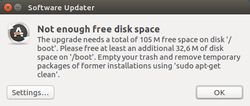

Systempflege
Dieser Artikel wurde für die folgenden Ubuntu-Versionen getestet:
Dieser Artikel ist größtenteils für alle Ubuntu-Versionen gültig.
Zum Verständnis dieses Artikels sind folgende Seiten hilfreich:
Für alle Betriebssysteme gilt: Eine der wichtigsten Voraussetzungen für ein stabil funktionierendes System ist und bleibt die Pflege. Bei einem Vergleich von Linux mit Windows wird schnell klar, dass einige gewohnte Maßnahmen nicht mehr nötig sind:
es gibt keine Registry, die aufzuräumen wäre
eine Defragmentierung des Dateisystems ist überflüssig und selbst unzählige installierte Programme können das System nicht bremsen
das Abschalten nicht benötigter Dienste ist nicht notwendig
Virenscanner lohnen nur, wenn Dateien an Windowssysteme weitergereicht werden sollen
Personal Firewalls sind überflüssig (siehe hierzu auch den Artikel Sicherheit)
Ein einmal laufendes Ubuntu ist kaum zu zerstören, es sei denn, man hilft durch unkontrollierte Maßnahmen (z.B. nicht maßvoll eingesetzte Fremdquellen), unqualifizierte Versuche am System oder der Vernachlässigung von Updates nach. Ein wenig Pflege muss dennoch sein, denn jedes System sammelt im Laufe seines "Lebens" Daten an.
Dieser Artikel soll aufzeigen, wie, wo und womit jeder Anwender ansetzen kann, um das eigene System sauber und somit stabil zu halten. Die primäre Zielgruppe dieses Artikels sind Einsteiger und mäßig Fortgeschrittene.
Allgemein¶
Datensicherung¶
Private wichtige Daten sichert man nie nur auf der Festplatte, auf der sich das Betriebssystem oder die Ursprungsdaten befinden. Geeignet sind beispielsweise externe Festplatten, die abseits vom PC gelagert werden. Da immer etwas unvorhersagbares geschehen kann, sollte auch vor dem Aufräumen, insbesondere des "Persönlichen Ordners", an eine Datensicherung gedacht werden.
Auslagerung von persönlichen Daten¶
Hier nutzt man die Möglichkeit, besonders große Dateien (z.B. Multimedia-Dateien) auf eine andere Partition oder Festplatte zu legen und diese automatisch oder temporär einzubinden. Siehe dazu auch Einbinden und fstab.
Updates¶
Ein weiterer zentraler Baustein jeglicher Systempflege ist das Einspielen vorhandener Aktualisierungen (Updates). Mehr Details sind in den Artikeln Aktualisierungen/Konfiguration und Aktualisierungen zu finden.
Nutzung der Kommandozeile¶
Auch wenn es Einsteigern oft schwerfällt, mit einem Terminal[1] umzugehen, wird die Nutzung dringend angeraten. Entstehende oder bestehende Probleme werden im Terminal durch Fehlermeldungen aufgezeigt. Damit gibt es einen Ansatzpunkt zur Beurteilung der Folgemaßnahmen. Dies gilt besonders dann, wenn Hilfe aus dem Forum erbeten wird. Supporter erfragen die angezeigten Fehlermeldungen - eine Hilfestellung kann schneller und gezielter stattfinden, wenn diese bereits bei der Formulierung des Problems genannt werden.
System aufräumen¶
Im laufenden Betrieb gibt es einige Möglichkeiten, den belegten Speicherplatz auf der Festplatte gefahrlos zu reduzieren. Die Belegung des Dateisystems ist einfach zu ermitteln. Für eine grafische Anzeige kann man eines der Programme aus Festplattenbelegung nutzen. Am schnellsten ist ein Terminal und die Eingabe von:
df -h
Beispielausgabe: Hier ist in der Spalte "Verw%" der aktuelle belegte Platz im Vergleich zum vorhandenen leicht zu erkennen.
Dateisystem Größe Benutzt Verf. Verw% Eingehängt auf /dev/sda1 7,6G 5,6G 1,6G 78% / /dev/sda6 131G 80G 44G 65% /home
Alte Kernel¶
Achtung!
Bitte unbedingt darauf achten, mindestens einen Kernel (i.d.R. den aktuellsten) zu behalten. Werden alle Kernel gelöscht, endet der nächste Systemstart in einer Endlosschleife.

Im Laufe der Zeit sammeln sich durch Updates auch eine nicht unbedeutende Zahl alter Kernel an. Diese können je nach Anzahl einiges an Speicherplatz belegen. Deren Entfernung steht bei der Systempflege an erster Stelle. Denn wenn der freie Platz auf der Systempartition ausgeht, besteht die Gefahr, dass "nichts mehr geht".
Dies macht sich meist erst dann bemerkbar, wenn Aktualisierungen oder Installationen nicht mehr funktionieren. Im schlimmsten Fall entsteht dadurch ein Problem mit fehlenden Inodes. Dies gilt auch und besonders dann, wenn durch eine Systemverschlüsselung eine eigene Boot-Partition[2] angelegt wurde. Diese bietet mit standardmäßig 150 MiB nur Platz für drei Kernel-Versionen.
Damit nicht durch Unachtsamkeit der aktuell benutzte Kernel gleich mit gelöscht wird, sollte zuerst die verwendete Kernelversion mit
uname -a
abgefragt werden. Diesen und am besten auch den direkten Vorgänger lässt man selbstverständlich im System. Mit diesen Kenntnissen kann man nun alte Kernel deinstallieren. Für Einsteiger kann es hilfreich sein, die jeweilige grafische Paketverwaltung[3] zu verwenden. Hier können Programme auch ohne Terminal installiert und deinstalliert werden. Dort sucht man nach den Paketen linux-image und linux-headers, nun werden alle installierten Kernel aufgelistet. Hier markiert man die nicht mehr benötigten Kernel und löscht diese.
Hinweis:
Alte, nicht mehr benötigte Kernel werden von Ubuntu Software oder dem Software-Center nicht angezeigt. Abhilfe schafft beispielsweise die Nutzung der Paketverwaltung Synaptic.
Der Befehl
sudo apt autoremove
entfernt ebenfalls alte Kernel. (Der aktuelle und der davor bleiben erhalten)
Nicht mehr benötigte Programme¶
Auch nicht mehr benötigte Programme/Anwendungen belasten die Systempartition. Diese sollten regelmäßig einschließlich ihrer Abhängigkeiten entsorgt werden. Ob man eine grafische Paketverwaltung wie z.B. Synaptic (die Vorgehensweise ist die Gleiche wie die der Entsorgung alter Kernel) einsetzt oder das Terminal nutzt, bleibt jedem selbst überlassen. Hauptsache, man macht es.
Der purge-Befehl :
sudo apt-get [OPTIONEN] purge PAKET1 [PAKET2] ## Pakete deinstallieren
und
sudo apt-get autoremove ## überflüssige Abhängigkeiten entfernen
sowie
sudo apt-get clean ## Paket-Cache leeren
im Terminal ausgeführt, helfen das System sauber zu halten. Mehr dazu unter apt-get.
Hinweis:
Wenn nicht mehr ausreichend freier Speicherplatz zur Verfügung steht, verweigert die Paketverwaltung die Deinstallation von Paketen. Dann hilft nur noch manuelles Löschen nicht mehr benötigter Dateien, bevor man die Paketverwaltung wieder benutzen kann.
Paketlisten aufräumen¶
Im Laufe der Zeit kann es passieren, dass sich in /var/lib/apt/lists/ eine Menge an Listen ansammelt. Nicht alle davon werden benötigt. Mit:
sudo rm -rf /var/lib/apt/lists/* sudo apt-get update
lässt sich so manchmal einiges an Speicherplatz einsparen.
Nicht benötigte Dokumentationen (*-doc) entfernen¶
Manchmal werden Dokumentationen in allen verfügbaren Sprachen mitinstalliert. Beispielsweise bei TeX Live kann das schnell mal in Richtung 1 GiB Platzbelegung gehen. Wer Dokumentationen grundsätzlich online liest, kann alle Pakete zur Dokumentation entfernen:
sudo apt-get remove texlive-*-doc
Dieser Befehl entfernt die Pakete:
texlive-fonts-recommended-doc
texlive-latex-base-doc
texlive-latex-extra-doc
texlive-latex-recommended-doc
texlive-pictures-doc
texlive-pstricks-doc
und spart so einiges an Platz.
Logdateien prüfen¶
In seltenen Fällen können auch übergroße Logdateien die Festplatte füllen. Dies kann z.B. dann passieren, wenn Logdateien eines Programms nicht dem Logrotate unterliegen, was aber normalerweise der Fall ist.
Um die Datenmengen in den Logverzeichnissen zu prüfen, dient der Befehl
sudo du -h /var/log
Die Ausgabe sieht ähnlich der folgenden aus:
796K /var/log/upstart 8,0K /var/log/lxc 4,0K /var/log/unattended-upgrades 2,5M /var/log/dist-upgrade 64K /var/log/cups 292K /var/log/lightdm ...
Dateien, die auf .gz enden, sind normalerweise Sicherung älterer Logdateien, die vom Logrotate angelegt wurden und auch nach einer gewissen Zeit automatisch gelöscht werden. Sollten große Logdateien eines bestimmten Programms vorhanden sein, so sollte man prüfen, ob man in der Konfiguration des Programms die Logdateigröße beschränkten kann.
Homeverzeichnis aufräumen¶
Der "Persönliche Ordner", das Homeverzeichnis, ist entweder Bestandteil der Systempartition / (= Root[5]) oder liegt auf einer eigenen Partition. Die Pflege des Homeverzeichnisses unterscheidet sich nur durch die Wertigkeit. Wie oben schon betont, muss immer vermieden werden, die Systempartition bis zum Letzten zu strapazieren.
Nicht nur in diesem Artikel steht das Zeichen ~ stellvertretend für die "Eigenen Dateien". Unter Linux ist das der Ordner /home/BENUTZERNAME/, wobei Benutzername natürlich variieren kann.
Hinweis:
Alle Pflegemaßnahmen des Homeverzeichnisses sind also umso wichtiger, wenn sich /home/BENUTZERNAME/ auf der Systempartition befindet. Das Homeverzeichnis von root (/root/) spielt unter Ubuntu dagegen keine Rolle, da hier normalerweise keine Daten abgelegt werden.
Vorschaubilder¶
Der Inhalt des Verzeichnisses ~/.thumbnails/ enthält Vorschaubilder von Bilddateien und kann problemlos geleert werden. Da das Verzeichnis versteckt ist, nutzt man den jeweiligen Dateimanager (Menüpunkt "→ Ansicht → verborgene Dateien anzeigen") oder die Tastenkombination Strg + H , um es sichtbar zu machen.
Alte Konfigurationsdateien¶
Nach der Deinstallation der Pakete eines nicht mehr benötigten Programms bleiben grundsätzlich immer die Konfigurationsdateien im Homeverzeichnis erhalten. Diese benötigen insgesamt sehr wenig Platz, so dass man sie durchaus stehen lassen kann.
Möchte man sie trotzdem löschen, kann man die Ordner ~/ und ~/.config/ auch selbst nach den Namen der gelöschten Programme durchsuchen.
Hinweis:
Die Ordnernamen sind nicht immer gleich dem richtigen Programm zuzuordnen! So findet sich z.B. das Konfigurationsverzeichnis für das E-Mail-Programm Thunderbird direkt unter ~/.thunderbird, während die Einstellungen von Firefox sich unter ~/.mozilla/firefox verbergen.
Sollten aus Versehen Konfigurationsdateien noch vorhandener Programme entfernt werden, so werden diese zwar beim nächsten Start des Programms automatisch neu angelegt, allerdings gehen durch das Löschen dieser Dateien alle eigenen Einstellungen verloren. Im Zweifelsfall sollte man davon Abstand nehmen, die Konfigurationsdateien zu löschen und benennt diese zunächst einmal nur um (z.B. in PROGRAMMNAME.old.)
Papierkorb leeren¶
Ob der Papierkorb gefüllt ist, erkennt man schon durch die grafische Anzeige. Um sicherzustellen, dass nicht aus Versehen wichtige Daten gelöscht werden, kann der Papierkorb auch geöffnet und eventuell noch benötigte Dateien angezeigt werden.
Achtung!
Die folgenden Befehle können nicht rückgängig gemacht werden!
Der Papierkorb kann auch über das Terminal geleert werden. Für den des Benutzers gilt:
rm -rf ~/.local/share/Trash/*
Sollten sich manche Dateien hierüber nicht entfernen lassen, hilft der Befehl:
sudo rm -rf /root/.local/share/Trash/*
Natürlich gibt es auch die Möglichkeit, unter Umgehung des Papierkorbes Daten direkt zu löschen, indem die zu löschenden Daten markiert werden, um sie dann mit ⇧ + Entf zu entfernen. Es erscheint ein Warnhinweis. Bestätigt man diesen, werden die Daten gelöscht. Diese Auswahl kann auch im Dateimanager voreingestellt werden.
Weitere Möglichkeiten¶
Webbrowser¶
Vielfach wird unterschätzt, was sich alles im Webbrowser ansammelt. Hier bietet es sich an, Cache, Verlauf, Chronik und evtl. auch Cookies zu löschen, um Platz zu gewinnen. Alternativ kann man beispielsweise den Cache auf eine bestimmte Größe beschränken.
E-Mail-Programme¶
Postfächer prüfen, aufräumen und/oder komprimieren. Insbesondere das Komprimieren kann bei Thunderbird Wunder bewirken.
Verzicht auf den Quelltext¶
Wer nicht selbst kompilieren will, kann auf den Quelltext verzichten. Für die grafische Einstellung geschieht dies in den "Software-Paketquellen". Dort unter "Software von Ubuntu" die Quelltexte deaktivieren. Über das Terminal geschieht dies durch die Deaktivierung des Quellcodes in der sources.list, erkennbar durch den Eintrag:
deb-src http://...
Auskommentiert werden diese, indem am Zeilenanfang das Zeichen # vorangestellt wird.
Hinweis:
Verzicht auf die Paketquelle proposed¶
Zu einem stabilen, gepflegten System gehört auch ein sorgsamer Umgang mit den Software-Quellen. Die Vorabveröffentlichungen unter proposed sollten also unbedingt deaktiviert bleiben, denn Pakete aus den "proposed"-Quellen haben auf Produktiv-Systemen nichts zu suchen. Pakete aus proposed können fehlerhaft sein oder fehlerhafte Abhängigkeiten haben und somit das gesamte System oder die Paketverwaltung unbrauchbar machen!
Grafische Werkzeuge zur Systembereinigung¶
Achtung!
Falsch angewandt, können die angesprochenen Programme eine Ubuntu-Installation bis zur Unbenutzbarkeit zerstören! Dringend zu beachten sind auch die Warnhinweise in den Artikeln der verschiedenen Werkzeuge.
Von Einsteigern wird ein grafisches Programm oft lieber verwendet als ein Terminal oder Synaptic. Jedoch bieten diese Werkzeuge nicht mehr als das, was sich auch mit ein paar Befehlen in Terminal, Synaptic oder einem Bash-Script erledigen lässt - allerdings zusammengefasst unter einer Oberfläche und so vermeintlich "einfacher" zu bedienen.
Immer wieder für Probleme sorgt die unsachgemäße Nutzung von verschiedenen Systemreinigungswerkzeugen wie z.B.
Diese Werkzeuge bieten keine Absicherungen und zeigen lediglich Dateien mit den gewählten Parametern an. Nicht alle leeren Ordner oder Dateien, die angezeigt werden, können auch bedenkenlos gelöscht werden! Es können auch wichtige Systemdateien und Verzeichnisse bei entsprechender Suchpfadauswahl angezeigt werden, die zum Teil sogar als Dubletten vorliegen müssen! Nicht zuletzt erinnern sie an die vielen "Tuning-Tools" unter Windows mit ihren (oft haltlosen) Versprechungen, das System aufzuräumen, zu pflegen und stabil, sicher und schnell zu halten. Daher sollten nur Dateien und Verzeichnisse gelöscht werden, deren Inhalt und Bedeutung man einschätzen kann.
Links¶
APT - Grundlage der Paketverwaltung bei Ubuntu
uCareSystem Core v3.0 released and available in PPA
 - Blogbeitrag - 03/2016
- Blogbeitrag - 03/2016
- Erstellt mit Inyoka
-
 2004 – 2017 ubuntuusers.de • Einige Rechte vorbehalten
2004 – 2017 ubuntuusers.de • Einige Rechte vorbehalten
Lizenz • Kontakt • Datenschutz • Impressum • Serverstatus -
Serverhousing gespendet von